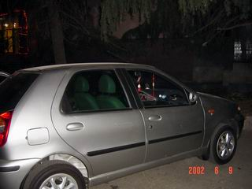
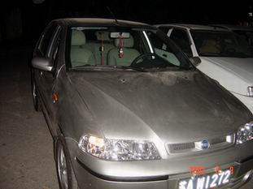
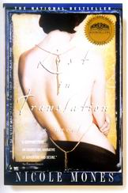
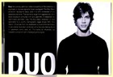

寂寞咖啡之6月12日 @ Jun 13, 2002
日子过得有些懒散，没有什么可谈论的，将最近拍的照片贴到这里，给自己的生活做个普通的标签吧！
在摩托罗拉公司工作的朋友买的新车，开了不到一个月的时间，车的品牌为派力奥。这位仁兄比我年轻两岁，兄弟姐妹们努力工作啊！

当它行使在路上的时候，路过的车上常会有人伸出脑袋来看这辆车。

日子过得有些懒散，没有什么可谈论的，将最近拍的照片贴到这里，给自己的生活做个普通的标签吧！
在摩托罗拉公司工作的朋友买的新车，开了不到一个月的时间，车的品牌为派力奥。这位仁兄比我年轻两岁，兄弟姐妹们努力工作啊！

当它行使在路上的时候，路过的车上常会有人伸出脑袋来看这辆车。


从去年开始，一种从南美流行而来的新音乐曲风Bossa Nova迅速地征服了都市里的听歌人。那种带着热带温暖的阳光、懒洋洋、听起来舒服又轻柔的音乐，实是令喜欢“小资”情调的人们倾倒。于是我们知道了生在南美的日本人小野丽莎的名字，她带来了清爽舒心的Bossa Nova音乐。我第一次买小野丽莎的CD是今年的4月13日下午，在南大生活区门口的私人音像店里。那是小野丽莎一张精选辑，收集了她从1997到2001年之间的一些歌曲。听音乐可能和心情有关，一阵一阵的。
纯美、浪漫、飘渺、迷人一直是情调音乐的重要指标，比如80年代的“恋人浪漫曲”，90年代的肯尼·G，还有一直到今天都还萦绕全球乐迷耳朵的恩雅。在新千年，出生于巴西的日本人小野丽莎带来一轮新的浪漫情调风潮，她的波萨诺瓦曲风的翻唱歌曲已成为众多文化白领的音乐新宠。
浪漫、阳光、海滩、椰树……这些都是听Lisa的歌所能想到的词，在新专辑 “美丽新世界”中收录的多首久唱不衰的经典情歌, 如”A Man and A Woman”、”Every Breath You Take”等, 这样的曲子, 配着慵懒, 写意的节奏, 很适合恋人们收听, 也是整天忙碌工作的上班族调节情绪的良药, 据说这样的音乐还被灌名为 “治疗系”音乐, 具有神奇般功效，不知是否灵验。
用一个词来形容”Bossa Nova”, 那就是―舒服。


从我个人的欣赏角度推荐下列几首小野丽莎的歌曲给大家，1、4、6、7、9、10是我特别喜欢的：
1.I WISH YOU LOVE—愿爱降临 专辑《美丽新世界》
2.CHEGA DE SAUDADE—思念满盈 专辑《卡瑞欧卡巴西爵士》
3.FLO DE YEMANJA—YAMANJA之花 专辑《蓝色夏威夷》
4.SMILE-微笑 专辑《香水》
5.DREAM-梦 专辑《DREAM》
6.PALPITE INFELIZ-不幸的预感 专辑《卡瑞欧卡巴西爵士》
7.MY CHERIE AMOUR-亲亲吾爱 专辑《蓝色夏威夷》
—-有一天我轻轻哼唱《MY CHERIE AMOUR》的旋律，朋友问我：“你知道中国哪部电影最恐怖吗？”我回答：“《夜半歌声》。”朋友说：“恩，是的。你刚才唱的时候让我想到《夜半歌声》了。”
8.BLUE HAWLL-蓝色夏威夷 专辑《蓝色夏威夷》
9.PIKAKE-茉莉 从未发表曲
10.ANGEL’S EYES-天使的眸子 专辑《DREAM》
初听小野丽莎的歌曲，感觉和我一直玩的模拟游戏《THE SIMS》本身带着的背景音乐差不多的风格。并且立刻就喜欢上这种Bossa Nova曲风的音乐了。我喜欢一边放音乐一边做事情，小野丽莎的歌曲是我这段时间主要的背景音乐*：-）。如果连小野丽莎的音乐都无法让你安静松弛，那么，你真的是不可救药了。小野丽莎在那张《蓝色夏威夷》中将巴西的BossaNova与夏威夷的Hula音乐相结合，除了一贯的慵懒、纯美之外，又带给大家更清凉，更明媚的舒适感觉。


关于Bossa Nova
Bossa Nova是葡萄牙文，Bossa是一种拉丁双人舞节奏，Nova则是“新”的意思。结合起来，Bossa Nova就是指一种融合巴西桑巴舞曲和美国酷派爵士的一种“新派爵士音乐”。它不象伦巴舞那样有强烈的节奏，它的曲风轻快舒适，旋律也较为简单，能呈现出非常浪漫的情调和煽情的气氛，十分迷人。
Bossa Nova的流行风潮是在20世纪五六十年代左右。当年南美爵士名家Antonio Carlos Jobim在海边邂逅一位摇曳生姿的美女，突发灵感，写下一曲“The Girl From Ipanema”。没想到这曲Bossa Nova的开山之作一炮而红，带动这种优雅热情又不失性感的音乐风格迅速风靡世界，在全世界掀起热浪，至今仍然经久不衰。
Bossa Nova在日本很受大众的欢迎，业界有许多乐手以演奏Bossa Nova为生，然而小野丽莎要比他们正宗一些。丽莎虽然是纯正的日本血统，却出生、成长于巴西圣保罗，从小在父亲经营的爵士俱乐部里耳濡目染，接受良好氛围的熏陶，故深得Bossa Nova的神髓。小野丽莎10岁回到祖国日本，15岁拿起吉他唱歌。自1989年出版返回日本后的第一张专辑以来，她都不以花俏和华丽的制作手法取胜，着重凸显出Bossa Nova曲风中所包容的节奏感与原音之美。充满自然质感的音色，质朴一如民谣歌曲的表演方式，10年以来已经成为小野丽莎的个人特色。
两天的休息日已经过去了大半天，可是我好象什么都没有做，我的健身计划；我想要看的小说；我打算听的新CD；我需要给我的狗狗一些相处的时间（它现在就睡在我的脚下）；我还要上街为新裙子配一件合适的上装；昨天晚上世界杯足球比赛阿根廷输给英格兰，我生气，今天晚上还要继续生气，因为想知道中国队究竟会输给巴西几个球……好象很多的事情正在排队等着，而两天的时间似乎太少了。6月10日一早上班要到银行去验货，过不了多久可能要去上海出差；认识15年的朋友“NICK”6月9日过生日，该送什么生日礼物给他，是自己带去上海当面交给他，还是快递过去？……
中午听老爸讲今天早上他到街对面的公园遛狗，湖面上有厚厚的浮萍，我家的狗狗在岸边站了一会儿便跃身跳向浮萍，呵呵，是的，它以为是草地，反正都是绿绿的，结果不幸落水。这是狗狗第一次游泳，跳到水里之后，狗狗居然紧张的朝湖心游去，老爸不停的在岸上叫狗狗的名字，它这才折返回来。我家的狗狗出生于2001年4月28日，不知道是哪个星座，我家的狗狗也有户口。不过类似今天这种情况狗狗也不是第一次遇到了。有一次狗狗撒了欢儿地往前奔跑，结果撞到透明的玻璃门上；另一次见了宽广茂盛的草坪，狗狗马上兴奋的扑倒在上面打滚玩耍，结果滚了一身别的小狗的粪便回来。呵呵….天真可爱的宝贝！

很可爱吧！现在它可是想女朋友想疯了。
上星期五听BESS讲了一个笑话，挺逗的。大概内容如下：
一个厂长学习一段时间英语之后，给他的职工上课。
厂长问道：“HOW ARE YOU 和HOW OLD ARE YOU是什么意思？”
职工回答：“HOW的意思是‘怎么’，ARE的意思是‘是’，YOU是‘你’的意思。HOW ARE YOU的意思是‘怎么是你？’HOW OLD ARE YOU里面的OLD是‘老’的意思，整句话的意思便是‘怎么老是你？’”
厂长说：“错误。HOW ARE YOU是‘你好’，HOW OLD ARE YOU是‘你老好’的意思。”
BESS五月去瑞士旅游时拍摄的照片

早上离开家准备上班的时候，突然跑到书柜里翻找刊登《身体上的国境线》那篇小说的《收获》杂志，此想法与彼想法之间没有一点缝隙和犹豫，我真的是那种很典型的思维跳跃的人。常常在聊天对象还没有反应过来，我已经更换到另一个话题上了。作者写的这部长篇小说很真切的记录了一个从大学毕业到工作三五年的青年的生活情感历程。记录了那个“我”对于生存意义、人情世故的认识，以及那个连“我”自己都惊讶的生活观念和行为上的蜕变。之所以陶醉这部小说不仅因为作者描述“我”的心路过程本身的诱人魅力，更深层的是通过“我”来获取现实中的自己被现实生活所迷惑且无法解释的诸多问题的一些答案。

PAGE145
我又想起了三年前的那个夏天，我刚刚在情绪的最低谷度过了自己的二十五岁生日。远在法国的女友夏拉，沉寂数月之后来了一封长信，恳求结束我们之间的恋情。尽管早在她回国时，我就预感到这样的结局难以避免，可等到它真的降临，心里还是有种猝不及防的巨大失落。那些日子我常常整夜失眠，以至白天上课时眼圈红肿，无精打采。对于坐在下边的学生来说，我的面容恐怕要比写在黑板上的语法条规显得更为深奥和费解。我一遍遍地回想我和夏拉之间的往事，心里涌满了对生命中已经逝去的三分之一难以言喻的悲戚。
PAGE146
......对我来说，这是自然而然的。在她身上有种说不出的奇特之处，足以使我第一眼就把她和其他的那些留学生区别开来。如果非要进行一番剖析，那我只能说，她给我的感觉是刚好不偏不倚走在一条雅致和粗野、激情和颓废的分界线上，而她本人对这一点却毫不知觉。......
PAGE149
是啊，我爱依莎贝塔把身体交给我的方式。我爱她拖长的呻吟和辐射班的扭曲。我渴求她，并且分明感到她对我的渴求丝毫不在我对她的渴求之下。与此同时，我的脑际却又隐隐约约现出夏拉的身影。那使现实的表层绽开一条条纤细的裂缝。...
PAGE150
我想，我之所以过后对依莎贝塔久久不能忘怀，跟那天夜里她在床上激情飞扬，无所顾忌的表现大有关系。
......
不知怎么，依莎贝塔给我这样一种强烈的感觉，即她的生理构造似乎天生就和从事性事结下了不解之缘，似乎一旦脱离性欲的满足，她的身体中最主要的那部分机能就会逐渐衰竭，以至生命垂垂待毙。我渐渐开始相信，她正在通过自己的行为宣扬一种建立在男欢女爱基础上的世界观，而这种世界观的毫无廉耻带给我得震惊，更甚于让我销魂的程度。

PAGE151
......她没有详述两人分手的原因，我只是从她浮光掠影的叙述中得到某种讯息：那段旧情并非象她说的那样轻易就能跨逾。起码，乔瓦尼（她的前男友）在她心里空出的位置，绝不是我一夜之间就能填补得了的。既然如此，不问也罢。
PAGE154
我禁不住对自己说：看哪，看这个人，你与她曾经共享多么亲密的时光，你的热情曾以怎样的澎湃漫过她肢体是行的峰峦和沟壑，你曾经为她迷失，对她的坦诚还产生过犹疑和不信任。可是眼下，你居然怯于与她路遇，只能躲在暗处，不动声色地任她从你眼界中消失，不动声色地任你生命的一部分在心底燃成一堆灰烬。
这个时候，我不能不为自己身上流溢出的冷酷而深深骇异。
PAGE155
“不，你不应该随随便便使用爱这个字眼。”
随随便便？“夏拉，难道你怀疑我的真诚吗？”
“不，我怀疑的是我们两人对爱的理解不一样。对我来说，爱一个人绝不是轻易就能作出的决定。只有当你和一个人长久相处，对他完全了解以后，才能明确你是不是真的爱他，他是不是真的值得你爱。袄跟一时的感情用事不同。......
......
我情不自禁为我和夏拉的关系悲伤起来。爱是需要时间的，这是夏拉的看法。爱需要的仅仅只是时间吗？身处其中的时代潮流似乎这样表明，爱更需要的是实力。甚至可以这样说，如果你没有实力却去爱一个人，那是对你所爱的人的一种不尊重，同时也是对爱本身的亵渎。当然，这里的实力不光指金钱或者经济什么的。不管怎么说，爱的确需要更多外在的东西。
PAGE156
夏拉是个心地善良的姑娘。我想，也许正是我那番话深深刺痛了她，使她在两个星期以后作出了离开中国的决定。临上飞机前的那天夜里，她最后一次来到我的房间，伏在我的肩头失声哭泣。她说，她一定争取找到机会重回中国。可是，她又补充道，如果最终她无法实现自己的心愿，那我从此就有了一个最好的法国朋友。我知道，她所说的法国朋友就是在法国的朋友，跟在月亮上的朋友是一个意思。她的泪水沾到我得脸上。直到这时我才真正知道我有多爱夏拉。
PAGE159
......“我只希望爱情降临到我身上时，我又足够的力量保证自己不会迷失。在我看来，爱情只不过是一种意念，而这种意念往往是短暂的、可疑的、不真实的、建立在假象基础之上的。我常常听到人们这样说，他们为了所爱的对象可以不惜牺牲一切。他们并不知道自己沉溺杂可悲的幻觉里。因为将爱的重心完全放到对象身上，结果使人们最终丧失了自我。我一直在想，难道一个人对另一个的感情非得超过一定的限度才能称之为爱，而在这之前就什么也不是吗？难道人们非要把爱推到一个无以复加的顶点才能善罢甘休吗？难道人们非要通过夸张、狂热甚至是病态的举动，才能将爱淋漓尽致地展现给所爱的对象吗？在这个世界上，有没有一种温和、恬淡、不事张扬、静水深流般的爱情呢？不幸的是我们每天接触到的书籍、电影、电视、流行音乐以至于整个人类文化都在不遗余力地宣扬那种迷幻式的爱情。爱情已经成为我们生活中最大的谎言和骗局。这样跟你说吧，我一点都不喜欢把自己完全交付出去的爱情。那只是人类天性中固有的虚弱面和不完满性的体现。如果存在一种真正的爱情，我相信它应该是使人积极的，而不是使人沮丧的。真正的爱情能给人一种成长的感觉。（依莎贝塔的爱情理论）
......
大概就是从认识依莎贝塔的那个夏天开始，我的心态几乎一夜之间变了个样。当初对夏拉那份难以割舍的痴迷苦恋，短短几天里被依莎贝塔轻易粉碎之后，在接下去的一场又一场对于异性的追逐中再也难觅踪影。与依莎贝塔逢场作戏式的交往风格被确立下来，并一再得以沿用。我已经记不清过去的三年里曾经和多少姑娘约会过了。


PAGE163
一个不容否认的事实是，随着感情寄托的对象频频转换，我的性格也产生出种种歧视和偏差。......我深为这种既不受个人意志左右，又毫无内在的规律可循的性格分裂和变形感到苦恼。不，道德上的诚实或者虚伪都远不足以作为评判标准。看来，与对他人的迷惑相比，我更为热衷的还是对自我的迷惑。
PAGE173
“怎么说呢，大概经过这几年的折腾，我已经不大清楚真正爱一个人究竟是怎么回事了。”......
PAGE174
回想成年以前禁锢的家庭和校园生活，连我自己都很惊讶自己会变成如今这样一个浪荡轻狂的家后。要知道，直到大学四年级的上学期，我才交上了自己的第一个女友蒲佳盈。我们是在大学里的收费机房认识的。我打毕业论文提纲时电脑突然出现故障，坐在一旁的她主动过来帮我，很快便使问题迎刃而解。几天以后，我在食堂排队买饭时又一次看见她，于是让她加塞站到我的前面。可以说，我们两个人都是在没有什么明确意识的情况下，象被某种看不见的力量推使私的，一步步走上了恋爱着条路。
PAGE175
（蒲佳盈）她建议我马上着手准备托福考试，我沉痛地答应了，因为我感到蒲佳盈已经成为我整个生命无法割舍的一部分。......
一天晚上，我在上百人的大课堂上睡着了，一觉醒来，看到身边的男男女女无一不在全神贯注，埋头哗哗做着试卷上的习题。我顿时有种荒谬莫名的感觉。一刹那间我恍然明白过来，不管我心里对蒲佳盈有多深的眷恋，我和她深究是两条路上的人。于是，我收拾起桌上的东西，把所有参考书送给邻座的一位小伙子，然后悄悄离开了教室。
PAGE181
“我不得不承认，实际上你就是我现在最爱的人。我对你的感情既象爱又不是爱，大概处于爱和友谊中间。但我真的不想卷入任何亲密的关系，我不想花难过的时间。我爱不起，你明白吗？”
......
“接受我的爱，对你来说真的不可能吗？”
“我能做的不是接受你的爱，而是帮助你一起克服它。”
“克服？”我苦笑起来，“怎么克服？”
“象克服眩晕那样克服。”她平静地说，“象克服病痛那样克服。”


回到宿舍，我真想对着墙壁大哭一场。为依莎贝塔对我的拒绝，为二十多年来我生活中遭遇到的种种失败，为我个人前途的茫然无着，甚至为我想哭却流不出一行眼泪。也许是以往历经的无数次感情游戏令我产生了厌倦，我转而渴望将全部的情愫倾注到唯一的对象身上。也许我只是想向自己证明，我还没有丧失一个人，为爱付出和牺牲的能力。然而，命运偏偏有意作弄我。它为我挑选了依莎贝塔，驱使她千里迢迢从亚平宁半岛来到中国，反复出没于我得眼前，时而疏远，时而亲近；可不管如何费尽周折，我们两人都注定不会有真正的结果。
PAGE192
我已经习惯于以一种不说带有轻蔑，但至少是超然其上的孤绝态度去对待自己的感情了。
去年，我看了2001年第二期《收获》杂志上的一篇长篇小说《身体上的国境线》，作者为贺奕。为这篇小说我陶醉了好几个月。作者描述小说里的人物的内心微妙变化和感受，和我本人心灵有着很多次的不期而遇。特拿来与君分享！
PAGE 143
那不是一段普通的感情，也就是说，它不会以人们常见的方式淡漠、枯朽和变质。那甚至不是情感本身，难以给它一个确切的命名。站在首都机场一层大厅标有“国际到达”字样的绿色灯牌下，我注视着正从通道鱼贯而出，形形色色的中外旅客们。从幼年开始，对火车站、机场和码头这类地方，置身于刚刚抵达或正待启程的人流当中，我就总会产生前程未定、归宿不明的空虚感，而这正好切合了我对自己以及人生根深蒂固的看法。
PAGE 147
“我只是有种模模糊糊的感觉：虽然我们看上去天差地远，骨子里却可能属于同一类人。”
“哪一类人？”
她仰起头。这时她的脸刚好隐匿在一片阴影里。
“如果你真感兴趣，我想，我想很快就会弄清楚的。”
PAGE 148
……我的口气那样轻松，飘飘然以至于几乎忘了，我的业余时间乃至全部个人生活，充其量只是受着心血来潮、惰性和挫折感的交替摆布罢了。
不过，在我们交谈中不断显现出的差异，不仅仅没有形成隔阂，相反，对于两颗素昧平生、不期而遇的心灵恰好还起到了相互感化的黏合作用。正是这些差异，使依莎贝塔和我同时萌发了深深的迷恋，断续的沉思，一种似乎要将它们捧置手心反复摩挲和把玩的兴趣。
PAGE 149
在那以后，我们接吻了。与其说是两个人相互吸引的结果，倒不如说，它是我们相互表达由衷感激的方式。它将馈赠和接受融为一体。如果在月光的朗照下，在如沐如浴的也色中，在历史的小小遗址上出现了一对青年男女，对于这样一个夜晚而言，接吻理所当然会成为其中的一个天然部分。我们所要做的，所应做的，所能做的，就是让它毫无保留地呈现出来。……全都迷失在莫名的怅惘中。他们不再以自身以外的任何东西作为存在的理由和追求的目的。既不是为了制造愉悦，也不是为了获得理解。仅仅是生命能量如一缕缕水汽向着虚无的不断发散而已。
PAGE 151
“……在我，可能是出于认为我们是同一类人的错觉；在你，可能是想要给你的中国之行划一个不寻常的句号。但开始得快的东西往往结束得更快。也许这是注定了的。“
……或许是因为连我们自己也意识到两人的关系过于飘渺空洞，而想让它更多地附着在某些相对坚实的事物上吧。一开始是石碑，然后是红墙、铜炉、汉白玉、玻璃瓦什么的。可是，在和三五天的情感波澜相比，历史真象我们以为的那般坚实么？…….“知道这会儿我心里最大的愿望是什么？”我茫然地摇头。“就是四周一个人也没有，只有我和你在这片高高的平台上做爱。”奇怪的是，从她的话里感觉不到丝毫淫靡的意味。那时我们正走在中和殿到太和殿之间熙熙攘攘的人流里。
PAGE 152
……我猛然悲哀地意识到，她已经把我身上辛辛苦苦得到的一部分对于生存意义、对于人情世故的认识，不留任何痕迹地永远带走了。她一点不清楚，正是和她偶然而短暂的遇合，使得我的生活在一阵剧烈摆荡之后偏离了惯常的轨道，并进而坠向茫茫无尽的虚空：她的柔情是整个过程中最残酷的部分。
……依莎贝塔，你该谢的不是我。要谢就谢将人与人分割开的时间，要谢就谢将人与人分割开的空间吧！在飞机的航线变得象天际一样模糊，在纸上的墨迹黯然枯朽，在无数次的日升月落，斗转星移之后，要知道，再不会有一种叫做思念的东西来折磨人的心灵了。
PAGE 153
…..遗憾的是，与依莎贝塔的久别重逢没有为解开我心头的疑团提供丝毫线索。只有一点无可否认，她在我心目中（主要是通过回忆构筑起）的形象正在一点点地瓦解。在我的感觉中她变得更加陌生了。陌生到我们之间似乎不曾有过任何瓜葛。
然而，最使我感到困惑的方面，并不是在依莎贝塔，而在我自己。如果说，以前我还可以佯装对自己的空虚和堕落视而不见，那依莎贝塔的出现等于打开了一面雪亮的镜子，将我这几年来心性上的蜕变暴露无遗。的确，我再也不是依莎贝塔见过的那个不谙世故，自命不凡，喜欢远眺和沉思，对感情创伤既恐惧又着迷的家伙了。……我渴望成功的雄心正在日渐淡薄。那么，我为此感到羞愧吗？依莎贝塔一定不会想到，如今的我安于平庸、浑浑噩噩的是生活，简直就像一滴油浮在水面那么的自在。
PAGE 158
“……爱情是一种必然会被时间磨损掉的东西，因此每一个男朋友在你生活中都会成为过去。友情却不一样，它没有爱情那么极端和苛求，所以比爱情更为持久。只有友情值得你花一辈子去保持和珍惜。一个真正的朋友意味着他在你生活中的每一个阶段都是朋友。……作为朋友要比彼此相爱或者不再来往都更有意义。”

PAGE 205
…“我还得要问，为什么有人会迷恋那种感情上的漂泊无依的感觉呢？”
“这个嘛，就等于是问为什么有人会迷恋旅行一样。为什么有人会迷恋旅行呢？我想是因为他们觉得自己的日常生活过于平庸乏味，眼界过于狭小，希望暂时从中摆脱出来。他们希望能够看到奇异的风光，体验到新鲜的乐趣，这会使他们觉得自己的生活有了某种程度的转变。我也喜欢旅行，但是和其他人有所不同的是，我发现和人的相遇也能让我感到处于一场旅行当中。可能是和朋友相对而坐一起聊天，也可能是与人在床上一起缠绵。男人和女人的相遇尤其像是一场旅行，而如果他们从相遇的开始就注定会要分手那就更像一场旅行了。……
PAGE 206
“……爱情表面上花团锦簇，其实却是集人类各种阴暗心理之大成的渊菽：嫉妒、猜疑、自私、诱惑、欺诈、虚荣心、占有欲乃至仇恨。想想看，古往今来，多少人间悲剧因爱情而起。”
“可是你还是很看重爱情，不是吗？”
……
“这是因为什么呢？”
“我想是懦弱吧。”卡罗琳说，“在这一点上，我好象没法让自己坚强起来。……
PAGE 208
云端之上的她是否明白，从今后我将不再困惑于爱的本质，而只会困惑于怎样才能象爱她那样，去爱任何一个别的姑娘呢？


在SOHU.COM上搜索“辞职”，结果为：
—伊拉克足协的主要领导官员集体辞职
—叶利钦辞职
—辞职还是考研好好思量
—尼泊尔副首相提出辞职
—南联盟总理及盟友宣布集体辞职
......
相关检索：
辞职信
辞职信范例
辞职信写作范例
辞职报告
个人辞职报告
辞职书
撰写辞职信
辞职报告的书写
辞职书300例
写辞职信
......
“辞职”是我经常想到的两个字，就象很多时候活得不耐烦了死也是一种解脱是一回事吧！
上周五5月31日，我们分公司的总经理辞职了。6月3日早上，他打电话到我家告诉我向他索要两天的电话号码。我老妈问他是谁，他回答说是我的同事。那时侯我还不能确定前一天听到的消息是否属实。后来上班了，知道一切已经发生。有点后悔没有在星期一的早上对他说几句感激他的话。
据说，星期五他写了一封《告全体职工书》，贴在办公室走廊的黑板上，那块黑板平时是用来催货和写通知的地方，那块黑板与我的工作和生活没有任何联系，甚至每每路过我都不会抬眼看一下。他的《告职工书》就贴在了那块黑板上，这应该是那块黑板存在以来最有历史意义的一天。可惜我没有看见，星期五我出差了，所以以后也不会再去看那块黑板，哪怕是轻描淡写的看看也没有这个意愿。
和他共事是从1999年初开始至今。在此之前，谈不上对他有什么明显的情绪倾向。但我隐约感到他不太愿意与我FACE TO FACE的讨论工作上的事情，常常是经别人的“口”转述给我工作上的指示，然后我就会凶巴巴地问那个传话的人：“他怎么不直接告诉我呢？怕和我见面吗？”（其实我有点怕见他，呵呵...领导嘛！）是否是因为我太凶了呢？因为有一次我敬酒的时候，他小声说：“怪不得到现在还没有结婚呢，这么凶。”（我凶吗？）原先我主动找他N次就当时我的工作环境和现状与他进行过激烈的争论，那时我什么都不顾，只将我得眼泪、鼻涕、口水一并扔向他，暂不论我当时的表现是否过于咄咄逼人，但是通过那几次接触我清楚地知道他是个可以交流可以谈谈的领导，至少他愿意听并且事后还会有一些效果。
传说他在这个公司里有过几次的沉沉浮浮，但“后来者居上”在他身上体现的淋漓尽致。我们这个分公司积累了几代人20多年的辛勤耕耘和奋斗，去年的出口额在4500万美元左右，纯利润在1500万左右（保守的数字），没有一分钱的银行贷款。不懂英语、货源出生的他管理我们这个部门，能够有今天的骄人成绩实属不易，常言说“一个业务上的好手未必是管理上的好手。”我们这个部门在大公司是历来变化最多，是非最多，人心最活跃的一个部门，为什么？是的，为什么？还能为什么呢？“人为财死，鸟为食亡”总听说过吧！有朋友到我的办公室小坐，说了几句话就要告辞。后来他说：“你们那儿的人怎么都那样？办公室安静的要命，好象呼吸声都要被听见了。他们笑的时候都不知道笑容的背后究竟隐藏着什么...”说实话我们办公室已经算是很团结、很有活力的典范了。


就在几个星期前，我到他的办公室找他签字，看见他长过耳朵的头发实在忍不住，于是告诉他：“你的头发太长了。”过了几天我再去找他签字，发现他的耳朵后面干干净净露着的皮肤和修剪整齐的发型，当时差点笑场。想着那时侯的他哪里还有工夫考虑自己的头发，那时侯他正在谋划辞职的事情呢，不是吗？当一个人要辞职的时候一定会用很长时间来考虑，尤其是他这样在公司已经拥有一定的地位和财富，不年轻的人来讲。他需要权衡的东西比我们这个年纪需要权衡的要多得多。在我们这种还具有部分国企性质的机构中，辞职的人每年都有，大家进进出出也越来越自然和正常。“我要辞职”就好象在说我不想这样活，我想那样活，我不想吃蔬菜我想吃水果，你能有什么意见吗？那是我自己的事情。呵呵...


诺贝尔文学奖得主萧伯纳说：「此时此刻在地球上，约有两万个人适合当你的人生伴侣，就看你先遇到哪一个，如果在第二个理想伴侣出现之前，你已经跟前一个人发展出相知相惜、互相信赖的深层关系，那后者就会变成你的好朋友，但是若你跟前一个人没有培养出深层关系，感情就容易动摇、变心，直到你与这些理想伴侣候选人的其中一位拥有稳固的深情，才是幸福的开始，漂泊的结束」爱上一个人不需要靠努力，(只需要靠「际遇」，是上天的安排，但是「持续地爱一个人」就要靠「努力」，在爱情的经营中，顺畅运转的要素就是沟通、体谅、包容与自制(面临诱惑有所自制)。有许多人总是为「际遇」所迷惑与苦恼，意念不停、欲念不断、争逐不散，而忘了培养经营感情的能力才是幸福的关键。所以不要去追问到底谁才是我的Mr. Right，而是要问说在眼前的伴侣关系中，我能努力到什么程度、成长到什么程度，若没有培养出经营幸福的能力，就算真的Mr.Right出现在你身边，幸福依然会错过的，而活在犹疑与遗憾当中，这不就是许多「爱情虚无症」的遭遇与心态吗？
若你此刻已有一位长久相伴的伴侣，不要再随便三心二意地犹疑了，我们往往不易察觉感情中的一个陷阱，就是「近亲生慢侮」，也就是经济学中的铁律「边际效益递减法则」，跟你在一起越久的人，就越容易麻木与忽视，而新鲜的「际遇」总是那么动人可爱。
在感情对待中，难免有摩擦与无心的伤害，而且论得罪自己的次数累加起来最多的人，当然是跟我们在一起最久、最亲近的人。而新欢呢，又还没开始有得罪你的机会，再加上他的刻意讨好，所以新欢怎么看怎么可爱，旧爱怎么看怎么讨厌。但别忘了，新欢身上总是有不确定的未知数，旧爱身上就是有难得的熟悉感、确定感、信赖感。千万不要随便在偶然的「际遇」中迷失了自己，错放了幸福温暖的手。
所以萧伯纳的话，是要提醒情人不要太钻牛角尖于寻觅那唯一，应该把精神用在学会经营幸福的能力上，同时也提醒我们「溺水三千 只取一瓢饮」若有幸遇到了难得的伴侣，就不要再三心二意了，因为我们永远不知道一生何时会遇到两万个其中的几个 ，所以要知福惜福 、活在当下。
勇气
终于作了这个决定
别人说我怎么不理
只要你也一样的肯定
我愿意天涯海角都随你去
我知道一切不容易
我的心一直温习说服自己
最怕你忽然说要放弃
爱真的需要勇气
来面对流言蜚语
只要你一个眼神肯定
我的爱就有意义
我们都需要勇气
去相信会在一起
人潮拥挤我能感觉你
放在我手心里
你的真心
上午外出一趟，虽然天气热可还能够忍受。
现在是周六下午14：53分，我老妈在隔壁的房间跟着电视节目学恰恰舞，我在自己的房间上网。窗外的热气往屋内扑，倒不觉得热却能感到温暖。我的宝贝狗狗趴在我的脚边睡觉，睡之前他狂叫了好一阵子，也不知道他叫什么，吵得人心烦。小狗狗原来也会闹觉啊？！这时候我很满足，平平静静的也挺幸福！>
本来写好了长长的“续”，没有保存就拨号上网准备发帖子了，最终前功尽弃。写好的文字不知道怎么我的手指碰了键盘，顷刻间什么都没有了，就这样在凌晨2：22分，我在自己的小屋里凄惨地叫了一声。这件事情说明我喜欢冒险，喜欢自欺欺人。明明可以保存的非要这么着走钢丝，为哪般呢？
睡醒之后时间将近下午6点，当时火气很大，烦躁不安，索性骑车上街游荡，经过一些小店买了一双休闲的凉鞋和一套健身的运动衣裤。女人心情不好的时候，可能是通过购物来发泄的吧？

6月2日凌晨3：08分听见外面的马路上一闪而过的音乐声，可能是乘着人少出来的飚车一族。想起去年一个夏天的夜晚，大象打电话给我，问我是否出去感受一下他的“小毛驴”，早先他一直许诺要代我坐他老妈的小毛驴的。那时侯我一直很烦，索性向我老妈请假外出。大象是理工商学院毕业的，有一年的时光是和我同在外校的校园里上课、生活。我认识他之后才知道我妈和他爸在同一个系统里工作，并且认识。
这是我2001年7月3日留言的一段：
——体验过在情绪低落的夜晚，从闷热的城市骑摩托车冲向郊外的感觉吗？过了中山门的时候就可感到一股股的凉意和明显的温差，偶尔可以遇见三两个人，或走或骑着车，在我们的车灯中一晃而过。前面有一座桥，长长的桥梁在幽蓝的夜色中耀眼的白，于是我们熄灭车灯加大油门，准备行过下一座桥。周围葱翠茂盛的树木沉没在漆黑、寂寥的氛围中，仿佛这氛围包裹着我，仿佛世界只剩下我一人，那真正意义上的无人之境似乎就在眼前！
那时侯我是外校学生会的文艺部长，经过大会讨论选票上任了。为了96年国庆节的文艺晚会我招集各个班的学生干部开会。我在讲台上说话的时候，大象穿着花衬衣和沙滩裤，大一的他经过军训皮肤晒得黝黑，好象刚从海滨度假回来似的。他背对着我坐在前排的课桌上，和后面的同学喜笑颜开的聊天，声音特响亮。因为他无忧无虑的模样，我一点没有厌烦他的感觉。后来我们成了非常要好的朋友，接着我们各自居住的宿舍也成了友谊宿舍。因此，为我在外校两年短暂的求学生活增加了一些亮丽的色彩。那段时间我们两个宿舍的人经常一起吃饭，圣诞节时一起去教堂然后看通宵电影，第二天早上6点多钟再从市里赶回学校参加晨跑，还记得路上我们买的早饭是油条，边走边吃，挺香。
大象他们宿舍有个帅哥外号叫“罗耳”，这外号不知道出于哪个典故。有个大专班的女生追求他好长一段时间，尽管那个女孩子有自己的男朋友，并且还在同一个校园。她每天晨跑都会等在罗耳的宿舍楼下，还经常给罗耳买好吃的东西，以至于他们宿舍的男生都极力反对罗耳拒绝那个女孩。
后来大象毕业和我又在同一个大院同一个系统里工作，见面的机会不算多但也不少。谈了两年多的女友于去年分手，分手那会儿他也是经过了很长时间的思想斗争，最后还是分了。我们见面仍然还会那么随意自然的聊天调侃，可是感觉上他或是我已不再无忧无虑！

外校和我住一个宿舍的女生
——与GRACE认识到现在大约15年了，不知道是否可以品出茶香来？！人们常说女人的友谊比较短暂，一般在一方或者是双方有了婚姻和家庭之后而疏远、冷淡。不象男人的友谊...可我怎么也不相信。
GRACE告诉我她是灰色，我是红色的，可她告诉我那会儿我们还是少年儿童。现在我倒希望GRACE是红色，而自己是蓝色的。GRACE曾经将我们5个少年时代的好朋友写进她的武侠小说，依稀还记得“秋寒”这个侠客的名字在GRACE的小说中。有一天，我去GRACE家作客，她从桌子下面翻出一些纸张和本子，仔细一看是我少年时期画的画，GRACE说：“就是受你影响我才喜欢上画画的，你看我还保留着你的画册呢！”
真正的朋友未必要天天见面，可一见面必定还有很多的话题和思想能交流。真正的朋友在对方需要的时候，会毫不犹豫的出现在朋友的身边。我喜欢的方式就是将爱和友谊放在心里，放在心里的感觉很好！